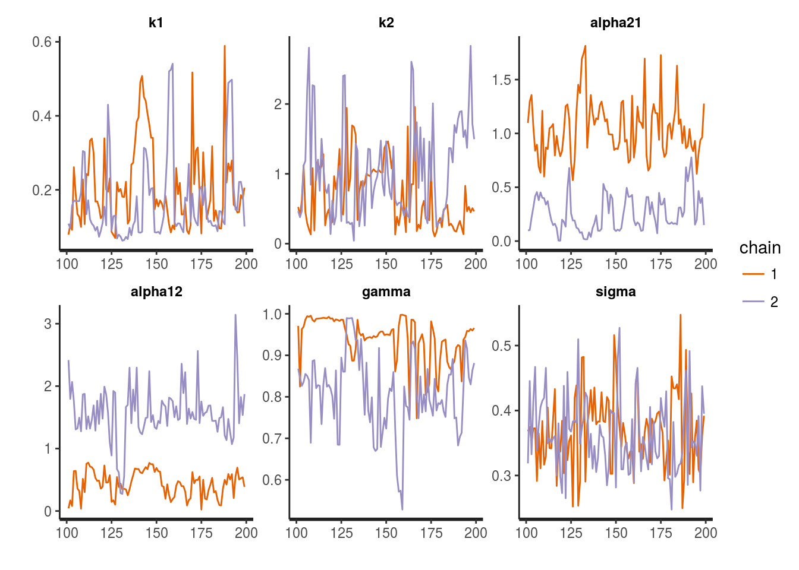
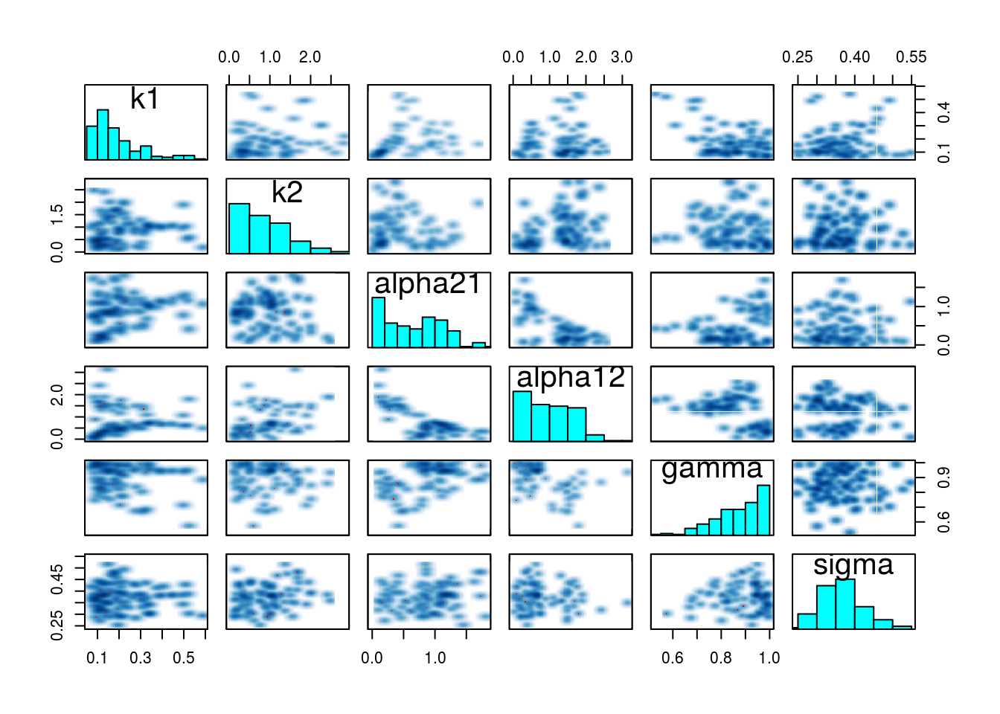
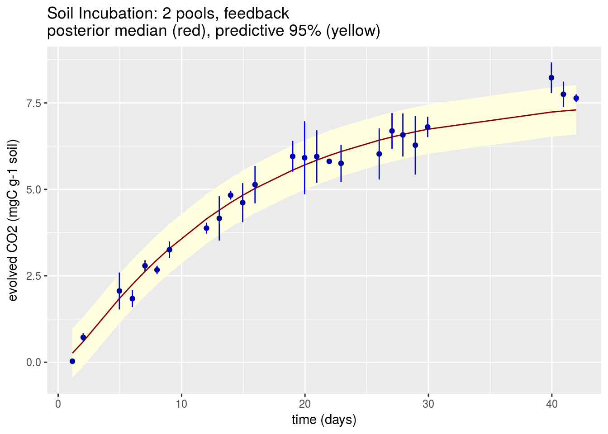
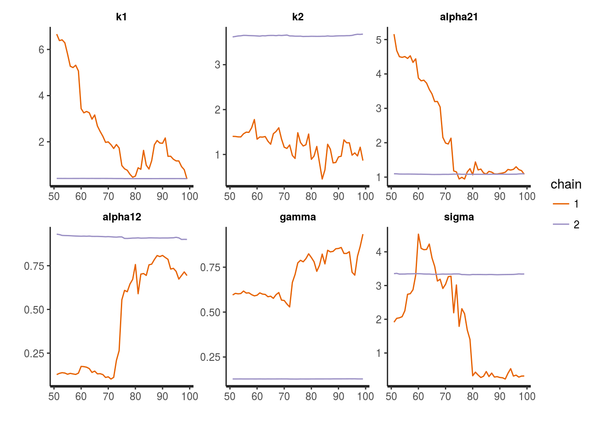

Soil Carbon Modeling with RStan
Bob Carpenter
24 November 2014
Overview
Experimental Data
Soil incubation experiments are used to estimate parameters of physical models of carbon flow in soil under different conditions. In the laboratory, external conditions such as temperature and moisture can be controlled, as can inputs such as leaf litter or microbial content and diversity. Measurements of carbon emissions are taken over time, perhaps along with other information such as microbial enzyme activity.
 Soil incubation experiment in progress at the Max Planck Institute, Jena.
Soil incubation experiment in progress at the Max Planck Institute, Jena.
Physical Models
Most soil-carbon physical models approximate soil heterogeneity with discrete pools of carbon. For example, a two-compartment model posits a labile pool of carbon with readily available carbon and a recalcitrant pool from which carbonr evolves more slowly. Systems may also posit additional pools for microbes, enzymes, and other physical features of soil ecology. Some of these pools may be measured. System dynamics are modeled with differential equations describing flows among the compartments.
Statistical Models and Inference
Statistical models are overlayed on the deterministic physical models to represent measurement error and unmodeled variation among replicated experiments. Bayesian statistical inference can be applied to estimate parameters based on combining experimental measurements with prior scientific knowledge of soil carbon dynamics or the experimental mechanism. Poststratification may then be used to predict behavior on regional or global scales based on information about biogeochemical conditions, which are typically estimated for geographical grids on the 10–100 kilometer square scale.
 Pan-European soil organic carbon (SOC) stock of agricultural soils. Image from European Commission, Joint Research Centre, European Soil Portal.
Pan-European soil organic carbon (SOC) stock of agricultural soils. Image from European Commission, Joint Research Centre, European Soil Portal.
Stan provides an expressive modeling language for statistical models including a full linear algebra and statistical library along with ordinary differential equation solvers. Stan also provides an efficient and scalable, fully Bayesian, inference mechanism based on adaptive Hamiltonian Monte Carlo sampling. Stan is integrated into the R statistical programming environment through the RStan interface.
This Document
The rest of this document describes
- data from a soil incubation study of evolved CO2,
- a differential equation model of the process with two compartments and feedback,
- an RStan implementation of the model, and
- summaries of Bayesian parameter estimates (a.k.a., data integration, inverse analysis).
Data
Sierra and Müller (2014) performed a soil incubation experiment in which they took a series of 25 measurements over time of evolved CO2. At each time point, multiple readings were taken from replicates and aggregated into a mean and standard deviation.
The data can be read in through Sierra and Müller’s (2014) SoilR package.
Load Data
library(SoilR,quietly=TRUE);##
## Attaching package: 'deSolve'## The following object is masked from 'package:graphics':
##
## matplotMunge Data
totalC_t0 <- 7.7; # not included in data, so hard code here
t0 <- 0;
N_t <- 25; # calculated by inspection
ts <- eCO2[1:25,2];
eCO2mean <- eCO2[1:25,3];
eCO2sd <- eCO2[1:25,4]; Plot Data
library(ggplot2,quietly=TRUE);
df <- data.frame(list(ts=ts,eCO2mean=eCO2mean,eCO2sd=eCO2sd));
interval_95pct <- aes(ymin = eCO2mean + 1.96 * eCO2sd,
ymax = eCO2mean - 1.96 * eCO2sd);
plot_data <-
ggplot(df, aes(x=ts, y=eCO2mean)) +
geom_point() +
geom_errorbar(interval_95pct, width=0, colour="blue") +
scale_x_continuous(name="time (days)") +
scale_y_continuous(name="evolved CO2 (mgC g-1 soil)") +
ggtitle("Evolved CO2 Measurements (with 95% intervals)");
plot(plot_data);Caption Goes here and how will it look?
Physical Model
Two Pool Linear Model with Feedback
Sierra and Müller (2014) present a two-pool model with decomposition rates for each pool as well as transfer rates from one pool to another.
Let \(C(t) = (C_1(t), C_2(t))\) be the concentration of carbon in pools 1 and 2. The model assumes pool-specific decomposition rates \(\kappa_1, \kappa_2\) and transfer rates \(\alpha_{2,1}\) and \(\alpha_{1,2}\) from pool 2 to pool 1 and vice-versa. The system dynamics are modeled through the equations \[ \frac{d C_1(t)}{dt} = - \kappa_1 \, C_1(t) + \alpha_{2,1} \, \kappa_2 \, C_2(t) \] and \[ \frac{d C_2(t)}{dt} = - \kappa_2 \, C_2(t) + \alpha_{1,2} \, \kappa_1 \, C_1(t). \]
Given initial carbon concentrations \(C(0)\) at \(t = 0\) and values for parameters \(\kappa, \alpha\), these equations may be solved for \(C(t_n)\) at measurement times \(t_n > 0\).
Statistical Model
Measurements
Initial State Measurement
Because the two pools are theoretical constructs to account for soil heterogeneity, they are not measured directly. Instead, only the total initial carbon \(C_1(0) + C_2(0)\) is measured, not how it is partitioned between the two pools.
Evolved Carbon Measurement
For each measurement time \(t_n\), the total carbon evolved from the system since the initial time \(t = 0\) is measured and recorded as \(\mbox{eCO}_2(t_n)\). This measurement is of the quantity predicted by the system of differential equations to be the total initial carbon minus what is left in the pools at time \(t_n\), \[ \left[ C_1(0) + C_2(0) \right] - \left[ C_1(t_n) + C_2(t_n) \right]. \] The SoilR package provides the \(\mbox{eCO2}_2(t_n)\) measurements.
Statistical Model Parameters
The statistical model assumes the following parameters.
| Param | Range | Description |
|---|---|---|
| \(\gamma\) | \((0,1)\) | proportion of initial carbon in pool 1 |
| \(\kappa_1\) | \((0,\infty)\) | decomposition rate (pool 1) |
| \(\kappa_2\) | \((0,\infty)\) | decomposition rate (pool 2) |
| \(\alpha_{2,1}\) | \((0,\infty)\) | transfer rate (pool 2 to 1) |
| \(\alpha_{1,2}\) | \((0,\infty)\) | transfer rate (pool 1 to 2) |
| \(\sigma\) | \((0,\infty)\) | residual error scale |
Probability Model
Priors
Weakly informative priors are supplied for all parameters, whose rough values are known from previous experiments.
\[\gamma \sim \mbox{Beta}(10,1)\]
\[\kappa_1, \kappa_2, \alpha_{1,2}, \alpha_{2,1} \sim \mbox{Normal}(0,1)\]
\[\sigma \sim \mbox{Cauchy}(0,1)\]
Sampling Distribution
The sampling distribution is a standard predictive error model assuming normal error of predictions,
\[\mbox{eCO}_2(t) \sim \mbox{Normal}(\hat{\mbox{eCO}_2}(t), \sigma),\]
where \(\mbox{eCO}_2(t)\) is the measured evolved carbon and \(\hat{\mbox{eCO}_2}(t)\) is the estimate of evolved carbon based on the solutions \(C(t)\) to the system equations given initial condition \(C(0)\) and model parameters \((\gamma,\kappa,\alpha,\sigma)\).
With this model, the noise scale \(\sigma\) is accounting both for measurement error in \(\mbox{eCO}_2(t)\) and the misprediction of the model with estimated parameters.
Posterior Distribution
By Bayes’s rule, the posterior distribution of the parameters given the observations is \[ p(\gamma,\kappa,\alpha,\sigma \, | \, \mbox{eCO}_2,C(0)) \ \propto \ p(\mbox{eCO}_2 \, | \, \gamma,\kappa,\alpha,\sigma,C(0)) \ p(\gamma,\kappa,\alpha,\sigma). \] Here, \(\mbox{eCO}_2\) is the full sequence of evolved carbon measurements.
Stan Program
The following is a dump of a file containing the Stan program to implement the 2-pool model with feedback as described above; the model code is fully documented, and is explained at more length below.
file_path <- "soil_incubation.stan";
lines <- readLines(file_path, encoding="ASCII");
for (n in 1:length(lines)) cat(lines[n],'\n');functions {
/**
* ODE system for two pool model with feedback and no inputs.
*
* This is the version that does not deal with measurement error.
*
* System State C is two dimensional with C[1] and C[2]
* being carbon in pools 1 and 2.
*
* The system has parameters
*
* theta = (k1, k2, alpha21, alpha12)
*
* where
*
* k1: pool 1 decomposition rate
* k2: pool 2 decomposition rate
* alpha21: transfer coefficient from pool 2 to pool 1
* alpha12: transfer coefficient from pool 1 to pool 2
*
* The system time derivatives are
*
* d.C[1] / d.t = -k1 * C[1] + alpha12 * k2 * C[2]
*
* d.C[2] / d.t = alpha21 * k1 * C[1] - k2 * C[2]
*
* @param t time at which derivatives are evaluated.
* @param C system state at which derivatives are evaluated.
* @param theta parameters for system.
* @param x_r real constants for system (empty).
* @param x_i integer constants for system (empty).
*/
real[] two_pool_feedback(real t, real[] C, real[] theta,
real[] x_r, int[] x_i) {
real k1;
real k2;
real alpha21;
real alpha12;
real dC_dt[2];
k1 <- theta[1];
k2 <- theta[2];
alpha21 <- theta[3];
alpha12 <- theta[4];
dC_dt[1] <- -k1 * C[1] + alpha12 * k2 * C[2];
dC_dt[2] <- - k2 * C[2] + alpha21 * k1 * C[1] ;
return dC_dt;
}
/**
* Compute total evolved CO2 from the system given the specified
* parameters and times. This is done by simulating the system
* defined by the ODE function two_pool_feedback and then
* subtracting the sum of the CO2 estimated in each pool from the
* initial CO2.
*
* @param T number of times.
* @param t0 initial time.
* @param ts observation times.
* @param gamma partitioning coefficient.
* @param k1 decomposition rate for pool 1
* @param k2 decomposition rate for pool 2
* @param alpha21 transfer coefficient from pool 2 to 1
* @param alpha12 transfer coefficient from pool 1 to 2
* @param x_r real data (empty)
* @param x_i integer data (empty)
* @return evolved CO2 for times ts
*/
real[] evolved_CO2(int N_t, real t0, real[] ts,
real gamma, real totalC_t0,
real k1, real k2,
real alpha21, real alpha12,
real[] x_r, int[] x_i) {
real C_t0[2]; // initial state
real theta[4]; // ODE parameters
real C_hat[N_t,2]; // predicted pool content
real eCO2_hat[N_t];
C_t0[1] <- gamma * totalC_t0;
C_t0[2] <- (1 - gamma) * totalC_t0;
theta[1] <- k1;
theta[2] <- k2;
theta[3] <- alpha21;
theta[4] <- alpha12;
C_hat <- integrate_ode(two_pool_feedback,
C_t0, t0, ts, theta, x_r, x_i);
for (t in 1:N_t)
eCO2_hat[t] <- totalC_t0 - sum(C_hat[t]);
return eCO2_hat;
}
}
data {
real<lower=0> totalC_t0; // initial total carbon
real t0; // initial time
int<lower=0> N_t; // number of measurement times
real<lower=t0> ts[N_t]; // measurement times
real<lower=0> eCO2mean[N_t]; // measured cumulative evolved carbon
}
transformed data {
real x_r[0]; // no real data for ODE system
int x_i[0]; // no integer data for ODE system
}
parameters {
real<lower=0> k1; // pool 1 decomposition rate
real<lower=0> k2; // pool 2 decomposition rate
real<lower=0> alpha21; // transfer coeff from pool 2 to 1
real<lower=0> alpha12; // transfer coeff from pool 1 to 2
real<lower=0,upper=1> gamma; // partitioning coefficient
real<lower=0> sigma; // observation std dev
}
transformed parameters {
real eCO2_hat[N_t];
eCO2_hat <- evolved_CO2(N_t, t0, ts, gamma, totalC_t0,
k1, k2, alpha21, alpha12, x_r, x_i);
}
model {
// priors
gamma ~ beta(10,1); // identifies pools
k1 ~ normal(0,1); // weakly informative
k2 ~ normal(0,1);
alpha21 ~ normal(0,1);
alpha12 ~ normal(0,1);
sigma ~ cauchy(0,1);
// likelihood
for (t in 1:N_t)
eCO2mean[t] ~ normal(eCO2_hat[t], sigma); // normal error
} The Stan program begins by defining two convenience functions in the functions block.
two_pool_feedback()computes the solutions to the system of differential equations given the model parameters, initial conditions, and requested solution times in an array. The second.evolved_CO2()computes the cumulative evolved CO2 given the compartment concentrations computed by the first function.
The data block declares the data that is read in, including the initial total carbon, initial time, measurement times, and measured total evolved carbon. The parameter block declares parameters with constraints as defined above. The transformed parameter block is used to compute the evolved CO2 estimate given the system equations and parameter values. Finally, the model block just repeats the sampling distributions for all of the parameters.
Fitting the Model with RStan
library(rstan);
fit <- stan("soil_incubation.stan",
data=c("totalC_t0", "t0", "N_t", "ts", "eCO2mean"),
control=list(adapt_delta=0.90,
stepsize=0.005),
chains=2, iter=200, seed=1234);## In file included from /home/aaronjg/R/x86_64-pc-linux-gnu-library/3.3/BH/include/boost/config.hpp:39:0,
## from /home/aaronjg/R/x86_64-pc-linux-gnu-library/3.3/BH/include/boost/math/tools/config.hpp:13,
## from /home/aaronjg/R/x86_64-pc-linux-gnu-library/3.3/StanHeaders/include/stan/math/rev/core/var.hpp:7,
## from /home/aaronjg/R/x86_64-pc-linux-gnu-library/3.3/StanHeaders/include/stan/math/rev/core/gevv_vvv_vari.hpp:5,
## from /home/aaronjg/R/x86_64-pc-linux-gnu-library/3.3/StanHeaders/include/stan/math/rev/core.hpp:12,
## from /home/aaronjg/R/x86_64-pc-linux-gnu-library/3.3/StanHeaders/include/stan/math/rev/mat.hpp:4,
## from /home/aaronjg/R/x86_64-pc-linux-gnu-library/3.3/StanHeaders/include/stan/math.hpp:4,
## from /home/aaronjg/R/x86_64-pc-linux-gnu-library/3.3/StanHeaders/include/src/stan/model/model_header.hpp:4,
## from file161734d02dab.cpp:8:
## /home/aaronjg/R/x86_64-pc-linux-gnu-library/3.3/BH/include/boost/config/compiler/gcc.hpp:186:0: warning: "BOOST_NO_CXX11_RVALUE_REFERENCES" redefined
## # define BOOST_NO_CXX11_RVALUE_REFERENCES
## ^
## <command-line>:0:0: note: this is the location of the previous definition## Warning: There were 11 divergent transitions after warmup. Increasing adapt_delta above 0.9 may help. See
## http://mc-stan.org/misc/warnings.html#divergent-transitions-after-warmup## Warning: Examine the pairs() plot to diagnose sampling problemsFit Summary
The following R code will print the summary of a model fit; explanations below.
options(width="100");
print(fit,digits=2);## Inference for Stan model: soil_incubation.
## 2 chains, each with iter=200; warmup=100; thin=1;
## post-warmup draws per chain=100, total post-warmup draws=200.
##
## mean se_mean sd 2.5% 25% 50% 75% 97.5% n_eff Rhat
## k1 0.19 0.02 0.11 0.07 0.10 0.15 0.22 0.51 54 1.04
## k2 0.88 0.16 0.60 0.14 0.38 0.80 1.19 2.40 14 1.09
## alpha21 0.65 0.42 0.45 0.04 0.20 0.64 1.04 1.63 1 2.30
## alpha12 1.00 0.61 0.66 0.09 0.44 0.74 1.50 2.30 1 2.21
## gamma 0.88 0.08 0.10 0.67 0.81 0.89 0.96 0.99 2 1.46
## sigma 0.37 0.00 0.06 0.27 0.32 0.36 0.40 0.49 195 0.99
## eCO2_hat[1] 0.24 0.02 0.16 -0.12 0.13 0.26 0.35 0.52 89 1.01
## eCO2_hat[2] 0.59 0.02 0.17 0.27 0.47 0.60 0.71 0.90 89 1.00
## eCO2_hat[3] 1.83 0.02 0.15 1.58 1.72 1.84 1.94 2.13 74 1.02
## eCO2_hat[4] 2.25 0.02 0.14 2.01 2.15 2.25 2.35 2.53 78 1.02
## eCO2_hat[5] 2.63 0.01 0.13 2.39 2.53 2.63 2.73 2.89 92 1.02
## eCO2_hat[6] 2.97 0.01 0.13 2.73 2.88 2.96 3.06 3.21 105 1.01
## eCO2_hat[7] 3.30 0.01 0.12 3.09 3.21 3.29 3.38 3.53 127 1.01
## eCO2_hat[8] 4.15 0.01 0.11 3.95 4.07 4.15 4.21 4.36 200 0.99
## eCO2_hat[9] 4.40 0.01 0.10 4.20 4.34 4.40 4.47 4.62 200 0.99
## eCO2_hat[10] 4.62 0.01 0.10 4.41 4.56 4.62 4.68 4.82 200 0.99
## eCO2_hat[11] 4.83 0.01 0.10 4.62 4.77 4.83 4.89 5.03 200 0.99
## eCO2_hat[12] 5.03 0.01 0.10 4.82 4.97 5.03 5.09 5.22 200 0.99
## eCO2_hat[13] 5.56 0.01 0.10 5.34 5.49 5.56 5.62 5.72 200 1.00
## eCO2_hat[14] 5.70 0.01 0.10 5.48 5.63 5.71 5.77 5.86 200 1.01
## eCO2_hat[15] 5.84 0.01 0.10 5.62 5.77 5.85 5.90 6.00 200 1.01
## eCO2_hat[16] 5.97 0.01 0.10 5.75 5.91 5.98 6.04 6.13 200 1.01
## eCO2_hat[17] 6.09 0.01 0.10 5.87 6.02 6.09 6.15 6.24 200 1.01
## eCO2_hat[18] 6.41 0.01 0.09 6.20 6.35 6.42 6.47 6.57 126 1.02
## eCO2_hat[19] 6.50 0.01 0.09 6.30 6.44 6.51 6.56 6.67 121 1.02
## eCO2_hat[20] 6.58 0.01 0.09 6.38 6.51 6.59 6.64 6.74 117 1.02
## eCO2_hat[21] 6.66 0.01 0.09 6.46 6.60 6.67 6.71 6.82 114 1.02
## eCO2_hat[22] 6.73 0.01 0.09 6.54 6.67 6.74 6.79 6.88 111 1.03
## eCO2_hat[23] 7.23 0.01 0.06 7.10 7.19 7.24 7.27 7.34 94 1.03
## eCO2_hat[24] 7.26 0.01 0.06 7.13 7.22 7.27 7.30 7.37 93 1.03
## eCO2_hat[25] 7.29 0.01 0.06 7.17 7.26 7.30 7.33 7.39 92 1.03
## lp__ 3.56 0.64 2.27 -1.77 2.76 3.89 4.97 6.61 13 1.11
##
## Samples were drawn using NUTS(diag_e) at Tue Jun 27 21:22:56 2017.
## For each parameter, n_eff is a crude measure of effective sample size,
## and Rhat is the potential scale reduction factor on split chains (at
## convergence, Rhat=1).There is one row per parameter, with the following columns, with statistics computed over all draws making up the sample.
In addition to the parameters, the row lp__ indicates the log density evaluated by the model; note that this quantity is equal to the log posterior up to an additive constant.
| Column | Description |
|---|---|
mean |
mean |
sd |
standard deviation |
N% |
percentiles (N/100 quantile) |
50% |
median |
n_eff |
number of effective samples |
R_hat |
potential scale reduction statistic (\(\hat{R}\)) |
se_mean |
standard error of posterior mean estimate (sd / sqrt(n_eff)) |
Inspecting the output, the Stan implementation provided comparable posterior estimates to those estimated with SoilR by Sierra and Müller (2014). This is a nice sanity check on both implementations.
Traceplots
traceplot(fit,c("k1","k2","alpha21","alpha12","gamma","sigma"));
The warmup draws are highlighted with grey background; rather than sampling, Stan is adapting the sampling parameters (discretization interval and mass matrix). The traceplots during the sampling stage indicate Stan is mixing well.
If Stan does not mix well, try lowering the initial step size, increasing the target acceptance rate, and increasing the number of warmup iterations.
Posterior Histograms and Scatterplots (pairs)
The pairs() function in RStan displays a grid of plots. The diagonal contains a histogram of the posterior samples for each parameter; the above and below diagonals provide scatterplots for pairs of parameters. The above and below plots are based on draws from the two different Markov chains.
pairs(fit, pars=c("k1","k2","alpha21","alpha12","gamma","sigma"));
Model Fit
The following figure, based on a figure in Sierra and Müller (2014), overlays the earlier plot of data and measurement error (blue) with the posterior median prediction for evolved CO2 (red) with 95% intervals (yellow) calculated from the median of the residual noise (\(\sigma\)) in the posterior.
library(ggplot2);
fit_ss <- extract(fit);
sigma_hat <- median(fit_ss$sigma);
eCO2_hat <- rep(NA,N_t);
for (t in 1:N_t) {
eCO2_hat[t] <- median(fit_ss$eCO2_hat[,t]);
}
df_post <- data.frame(list(ts = ts,
eCO2meas = eCO2mean,
eCO2_hat = eCO2_hat));
library(ggplot2);
interval_95pct <- aes(ymin = eCO2mean + 1.96 * eCO2sd,
ymax = eCO2mean - 1.96 * eCO2sd);
ggplot(df_post, aes(x = ts)) +
geom_ribbon(aes(ymin = eCO2_hat - 1.96 * sigma_hat,
ymax = eCO2_hat + 1.96 * sigma_hat),
fill="lightyellow") +
geom_line(aes(y=eCO2_hat),colour="darkred") +
geom_point(aes(y=eCO2meas),colour="darkblue") +
geom_errorbar(interval_95pct, width=0, colour="blue") +
labs(x="time (days)",
y="evolved CO2 (mgC g-1 soil)") +
ggtitle("Soil Incubation: 2 pools, feedback\nposterior median (red), predictive 95% (yellow)");
Measurement Error Model
It is straightforward to add a measurement error component to the model.
file_path <- "soil_incubation_measurement_err.stan";
lines <- readLines(file_path, encoding="ASCII");
for (n in 1:length(lines)) cat(lines[n],'\n');functions {
real[] two_pool_feedback(real t, real[] C, real[] theta,
real[] x_r, int[] x_i) {
real k1;
real k2;
real alpha21;
real alpha12;
real dC_dt[2];
k1 <- theta[1];
k2 <- theta[2];
alpha21 <- theta[3];
alpha12 <- theta[4];
dC_dt[1] <- -k1 * C[1] + alpha12 * k2 * C[2];
dC_dt[2] <- alpha21 * k1 * C[1] - k2 * C[2];
return dC_dt;
}
real[] evolved_CO2(int N_t, real t0, real[] ts,
real gamma, real totalC_t0,
real k1, real k2,
real alpha21, real alpha12,
real[] x_r, int[] x_i) {
real C_t0[2]; // initial state
real theta[4]; // ODE parameters
real C_hat[N_t,2]; // predicted pool content
real eCO2_hat[N_t];
C_t0[1] <- gamma * totalC_t0;
C_t0[2] <- (1 - gamma) * totalC_t0;
theta[1] <- k1;
theta[2] <- k2;
theta[3] <- alpha21;
theta[4] <- alpha12;
C_hat <- integrate_ode(two_pool_feedback,
C_t0, t0, ts, theta, x_r, x_i);
for (t in 1:N_t)
eCO2_hat[t] <- totalC_t0 - sum(C_hat[t]);
return eCO2_hat;
}
}
data {
real<lower=0> totalC_t0; // initial total carbon
real t0; // initial time
int<lower=0> N_t; // number of measurement times
real<lower=t0> ts[N_t]; // measurement times
vector<lower=0>[N_t] eCO2mean; // measured cumulative evolved carbon
real<lower=0> eCO2sd[N_t]; // measured cumulative evolved carbon
}
transformed data {
real x_r[0]; // no real data for ODE system
int x_i[0]; // no integer data for ODE system
}
parameters {
real<lower=0> k1; // pool 1 decomposition rate
real<lower=0> k2; // pool 2 decomposition rate
real<lower=0> alpha21; // transfer coeff from pool 2 to 1
real<lower=0> alpha12; // transfer coeff from pool 1 to 2
real<lower=0,upper=1> gamma; // partitioning coefficient
real<lower=0> sigma; // observation std dev
vector<lower=0>[N_t] eCO2; // evolved CO2
}
transformed parameters {
real eCO2_hat[N_t];
eCO2_hat <- evolved_CO2(N_t, t0, ts, gamma, totalC_t0,
k1, k2, alpha21, alpha12, x_r, x_i);
}
model {
gamma ~ beta(10,1); // identifies pools
k1 ~ normal(0,1); // weakly informative
k2 ~ normal(0,1);
alpha21 ~ normal(0,1);
alpha12 ~ normal(0,1);
sigma ~ normal(0,1);
// likelihood marginalizes out eCO2
// true eCO2 (unknown) generated from system plus noise
eCO2 ~ normal(eCO2_hat, sigma);
// measurement eCO2mean (observed) of true eCO2 value with
// measurement noise eCO2sd (observed)
eCO2mean ~ normal(eCO2, eCO2sd);
} This can be fit as before; note the additional data variable, eCO2sd.
fit_me <- stan("soil_incubation_measurement_err.stan",
data=c("totalC_t0", "t0", "N_t", "ts", "eCO2mean", "eCO2sd"),
control=list(adapt_delta=0.90,
stepsize=0.005),
chains=2, iter=100, seed=1234);## In file included from /home/aaronjg/R/x86_64-pc-linux-gnu-library/3.3/BH/include/boost/config.hpp:39:0,
## from /home/aaronjg/R/x86_64-pc-linux-gnu-library/3.3/BH/include/boost/math/tools/config.hpp:13,
## from /home/aaronjg/R/x86_64-pc-linux-gnu-library/3.3/StanHeaders/include/stan/math/rev/core/var.hpp:7,
## from /home/aaronjg/R/x86_64-pc-linux-gnu-library/3.3/StanHeaders/include/stan/math/rev/core/gevv_vvv_vari.hpp:5,
## from /home/aaronjg/R/x86_64-pc-linux-gnu-library/3.3/StanHeaders/include/stan/math/rev/core.hpp:12,
## from /home/aaronjg/R/x86_64-pc-linux-gnu-library/3.3/StanHeaders/include/stan/math/rev/mat.hpp:4,
## from /home/aaronjg/R/x86_64-pc-linux-gnu-library/3.3/StanHeaders/include/stan/math.hpp:4,
## from /home/aaronjg/R/x86_64-pc-linux-gnu-library/3.3/StanHeaders/include/src/stan/model/model_header.hpp:4,
## from file16174a31a166.cpp:8:
## /home/aaronjg/R/x86_64-pc-linux-gnu-library/3.3/BH/include/boost/config/compiler/gcc.hpp:186:0: warning: "BOOST_NO_CXX11_RVALUE_REFERENCES" redefined
## # define BOOST_NO_CXX11_RVALUE_REFERENCES
## ^
## <command-line>:0:0: note: this is the location of the previous definition## Warning: There were 21 transitions after warmup that exceeded the maximum treedepth. Increase max_treedepth above 10. See
## http://mc-stan.org/misc/warnings.html#maximum-treedepth-exceeded## Warning: There were 2 chains where the estimated Bayesian Fraction of Missing Information was low. See
## http://mc-stan.org/misc/warnings.html#bfmi-low## Warning: Examine the pairs() plot to diagnose sampling problemsHere is the summary of the posterior samples from the measurement error model.
options(width="100");
print(fit_me,digits=2);## Inference for Stan model: soil_incubation_measurement_err.
## 2 chains, each with iter=100; warmup=50; thin=1;
## post-warmup draws per chain=50, total post-warmup draws=100.
##
## mean se_mean sd 2.5% 25% 50% 75% 97.5% n_eff Rhat
## k1 1.40 1.01 1.63 0.40 0.41 0.41 1.88 6.34 3 1.91
## k2 2.42 1.23 1.25 0.73 1.23 2.70 3.64 3.67 1 9.31
## alpha21 1.67 0.60 1.16 1.03 1.08 1.09 1.24 4.52 4 2.07
## alpha12 0.68 0.25 0.31 0.11 0.58 0.85 0.91 0.92 2 6.56
## gamma 0.42 0.29 0.30 0.13 0.13 0.33 0.71 0.86 1 9.68
## sigma 2.58 0.81 1.26 0.27 2.00 3.32 3.34 4.09 2 2.84
## eCO2[1] 0.13 0.04 0.06 0.02 0.07 0.17 0.17 0.22 2 2.01
## eCO2[2] 0.50 0.23 0.24 0.27 0.27 0.44 0.73 0.85 1 5.53
## eCO2[3] 1.49 0.85 0.95 0.67 0.68 1.05 2.28 3.68 1 2.69
## eCO2[4] 1.44 0.29 0.36 0.98 1.17 1.17 1.76 2.12 2 1.92
## eCO2[5] 3.04 0.64 0.81 0.52 2.76 3.21 3.62 3.70 2 1.82
## eCO2[6] 3.66 0.99 1.01 2.55 2.67 3.51 4.55 4.98 1 12.59
## eCO2[7] 1.25 1.13 1.44 0.17 0.17 0.17 3.16 3.42 2 2.30
## eCO2[8] 2.23 1.65 1.66 0.58 0.58 2.14 3.89 3.99 1 36.52
## eCO2[9] 2.86 1.58 1.61 1.29 1.30 2.45 4.42 5.64 1 4.81
## eCO2[10] 2.61 2.22 2.24 0.38 0.38 2.54 4.82 4.93 1 56.98
## eCO2[11] 2.21 2.12 2.23 0.14 0.14 0.85 4.69 5.20 1 3.44
## eCO2[12] 2.55 2.24 2.32 0.35 0.35 1.20 5.06 5.66 1 3.87
## eCO2[13] 3.89 0.82 1.66 0.52 3.05 3.12 5.72 6.18 4 1.46
## eCO2[14] 2.52 1.52 2.15 0.99 1.03 1.03 5.49 6.08 2 2.64
## eCO2[15] 2.05 1.67 2.48 0.39 0.39 0.40 5.66 6.14 2 2.86
## eCO2[16] 4.02 1.82 1.97 1.17 2.24 5.55 5.81 5.85 1 4.71
## eCO2[17] 3.48 1.18 1.84 0.74 2.31 2.33 5.70 6.09 2 1.80
## eCO2[18] 3.14 2.73 2.80 0.43 0.44 1.92 6.16 6.76 1 4.92
## eCO2[19] 3.57 2.58 2.70 1.05 1.06 1.63 6.55 7.08 1 3.37
## eCO2[20] 4.14 2.29 2.32 1.86 1.86 3.32 6.56 6.96 1 7.23
## eCO2[21] 2.94 2.82 2.95 0.16 0.17 1.33 6.29 6.78 1 3.99
## eCO2[22] 5.11 1.70 1.71 3.38 3.42 5.00 6.81 6.95 1 23.50
## eCO2[23] 5.04 1.69 2.61 0.45 3.41 3.47 7.90 8.49 2 1.50
## eCO2[24] 5.93 1.44 1.68 3.20 4.58 4.65 7.69 8.01 1 1.86
## eCO2[25] 4.38 3.25 3.26 1.07 1.15 4.39 7.64 7.72 1 77.91
## eCO2_hat[1] -0.21 0.78 1.99 -5.60 0.00 0.48 0.57 2.24 6 1.24
## eCO2_hat[2] 0.78 0.39 1.31 -1.46 0.45 0.56 0.63 4.66 11 1.02
## eCO2_hat[3] 2.38 1.87 2.37 0.39 0.65 1.10 4.58 7.32 2 4.00
## eCO2_hat[4] 2.65 2.10 2.57 0.38 0.68 1.35 5.55 7.52 1 4.95
## eCO2_hat[5] 2.85 2.27 2.69 0.36 0.72 1.58 5.99 7.62 1 5.60
## eCO2_hat[6] 3.00 2.39 2.77 0.35 0.75 1.79 6.40 7.66 1 6.03
## eCO2_hat[7] 3.12 2.49 2.82 0.34 0.78 1.99 6.69 7.68 1 6.36
## eCO2_hat[8] 3.41 2.68 2.91 0.29 0.87 2.45 7.22 7.70 1 7.15
## eCO2_hat[9] 3.49 2.73 2.93 0.28 0.91 2.59 7.33 7.70 1 7.42
## eCO2_hat[10] 3.55 2.77 2.94 0.27 0.93 2.71 7.40 7.70 1 7.66
## eCO2_hat[11] 3.61 2.81 2.96 0.25 0.96 2.83 7.47 7.70 1 7.92
## eCO2_hat[12] 3.67 2.84 2.97 0.24 0.99 2.95 7.52 7.70 1 8.17
## eCO2_hat[13] 3.83 2.92 3.02 0.20 1.07 3.28 7.61 7.70 1 8.85
## eCO2_hat[14] 3.87 2.94 3.03 0.18 1.09 3.37 7.63 7.70 1 9.01
## eCO2_hat[15] 3.91 2.96 3.04 0.17 1.12 3.46 7.64 7.70 1 9.13
## eCO2_hat[16] 3.96 2.98 3.05 0.16 1.15 3.55 7.66 7.70 1 9.22
## eCO2_hat[17] 3.99 2.99 3.06 0.14 1.17 3.63 7.66 7.70 1 9.27
## eCO2_hat[18] 4.10 3.03 3.09 0.10 1.26 3.87 7.68 7.70 1 9.20
## eCO2_hat[19] 4.13 3.04 3.10 0.08 1.29 3.94 7.69 7.70 1 9.11
## eCO2_hat[20] 4.15 3.05 3.11 0.07 1.31 4.00 7.69 7.70 1 9.02
## eCO2_hat[21] 4.18 3.05 3.11 0.06 1.34 4.07 7.69 7.70 1 8.89
## eCO2_hat[22] 4.21 3.06 3.12 0.04 1.37 4.13 7.69 7.70 1 8.74
## eCO2_hat[23] 4.42 3.08 3.15 -0.10 1.64 4.64 7.70 7.70 1 7.05
## eCO2_hat[24] 4.44 3.08 3.15 -0.12 1.66 4.68 7.70 7.70 1 6.89
## eCO2_hat[25] 4.45 3.08 3.15 -0.13 1.69 4.72 7.70 7.70 1 6.73
## lp__ -16265.91 15956.92 17213.31 -42642.71 -30243.41 -7742.64 -26.46 34.37 1 6.94
##
## Samples were drawn using NUTS(diag_e) at Tue Jun 27 21:23:58 2017.
## For each parameter, n_eff is a crude measure of effective sample size,
## and Rhat is the potential scale reduction factor on split chains (at
## convergence, Rhat=1).And the traceplots.
traceplot(fit_me, c("k1","k2","alpha21","alpha12","gamma","sigma"));
Next Steps
There are several next steps which may depend on each other.
Two-Pool Model
Move noise to log scale to respect positivity constraint. This will make it multiplicative instead of additive; verify this with exploratory data analysis comparing residual to value.
- Evaluate some reparameterizations
- independent \(a_{2,1} = \alpha_{2,1} \, \kappa_2\) and \(a_{1,2} = \alpha_{1,2} \, \kappa_1\), and
- total decay \(\kappa_1\) for pool 1 and then split that with a parameter in \((0,1)\) between evolution and pool 2
Implement a measurement error model for each aggregated observation. This will presuppose an underlying true carbon concentration which is measured with error on several samples to produce the reported mean and standard deviations.
Work directly with the individual measurements in a hierarchical model.
Michaelis-Menten, Forward and Backward
These are models that involve an enzyme pool and biomass data and data from two carbon pools (or maybe just the aggregate).
Get the data into usable format.
Write out math for forward and reverse models.
Write out statistical models.
Implement forward Michaelis-Menten kinetics.
Implement reverse Michaelis-Menten kinetics.
Mixture Models
Evaluate mixture model at each observation level, which will require running the integrator to solve the diff eqs just between observation times. Each new integration will have to take up where the last solver left off.
Evaluate change point model going from forward to reverse kinetics. This will require evaluating the integrator over intial and final intervals of time points.
Replication and Tutorial
- Implement the second example of radiocarbon from Sierra and Müller (2014).
References
Papers
Schädel, C., Y. Luo, R. David Evans, S. Fei, and S. Schaeffer. 2013. Separating soil CO2 efflux into C-pool-specific decay rates via inverse analysis of soil incubation data. Oecologia 171:721–732.
Sierra, Carlos A. and Markus Müller. 2014. Parameter estimation of compartment models in SoilR using classical and Bayesian methods. CRAN Vignette. [pdf]
Colophon
All output, including plots, was generated directly from the code with the knitr R package using style Cerulean from within the RStudio integrated development environment.
This document is distributed under the CC-BY-3 license. The code is distrbuted under the new BSD license.